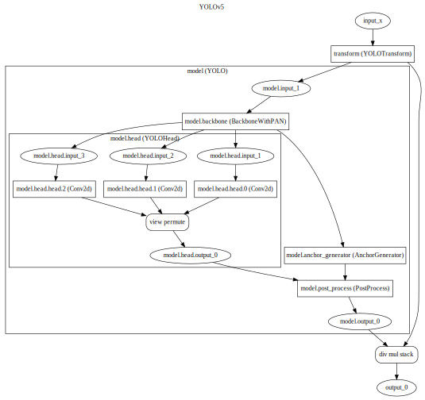
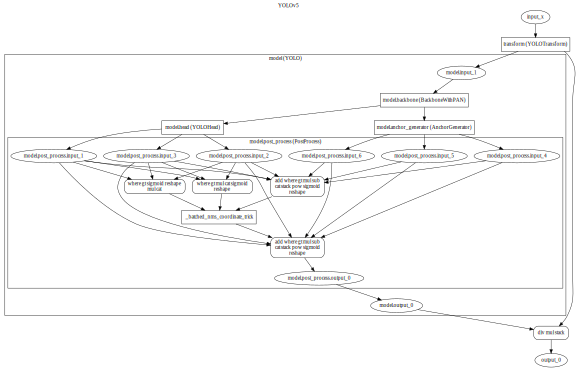

Visualize model graph¶
Above all, we need graphviz package. You can also refer to graphviz documentation
pip install -U graphviz
[1]:
from yolort.models import yolov5s
from yolort.relay import get_trace_module
[2]:
model = yolov5s(pretrained=True)
tracing_module = get_trace_module(model)
/usr/local/lib/python3.9/site-packages/torch/_jit_internal.py:668: LightningDeprecationWarning: The `LightningModule.datamodule` property is deprecated in v1.3 and will be removed in v1.5. Access the datamodule through using `self.trainer.datamodule` instead.
if hasattr(mod, name):
/usr/local/lib/python3.9/site-packages/torch/_jit_internal.py:668: LightningDeprecationWarning: The `LightningModule.loaded_optimizer_states_dict` property is deprecated in v1.4 and will be removed in v1.6.
if hasattr(mod, name):
/Users/chi/Documents/projects/coding/yolov5-rt-stack/yolort/models/yolo_module.py:97: TracerWarning: Iterating over a tensor might cause the trace to be incorrect. Passing a tensor of different shape won't change the number of iterations executed (and might lead to errors or silently give incorrect results).
for img in inputs:
/Users/chi/Documents/projects/coding/yolov5-rt-stack/yolort/models/transform.py:79: TracerWarning: Iterating over a tensor might cause the trace to be incorrect. Passing a tensor of different shape won't change the number of iterations executed (and might lead to errors or silently give incorrect results).
images = [img for img in images]
/Users/chi/Documents/projects/coding/yolov5-rt-stack/yolort/models/anchor_utils.py:31: TracerWarning: torch.as_tensor results are registered as constants in the trace. You can safely ignore this warning if you use this function to create tensors out of constant variables that would be the same every time you call this function. In any other case, this might cause the trace to be incorrect.
stride = torch.as_tensor([stride], dtype=dtype, device=device)
/Users/chi/Documents/projects/coding/yolov5-rt-stack/yolort/models/anchor_utils.py:50: TracerWarning: torch.as_tensor results are registered as constants in the trace. You can safely ignore this warning if you use this function to create tensors out of constant variables that would be the same every time you call this function. In any other case, this might cause the trace to be incorrect.
anchor_grid = torch.as_tensor(anchor_grid, dtype=dtype, device=device)
/usr/local/lib/python3.9/site-packages/torch/functional.py:445: UserWarning: torch.meshgrid: in an upcoming release, it will be required to pass the indexing argument. (Triggered internally at ../aten/src/ATen/native/TensorShape.cpp:2157.)
return _VF.meshgrid(tensors, **kwargs) # type: ignore[attr-defined]
/Users/chi/Documents/projects/coding/yolov5-rt-stack/yolort/models/anchor_utils.py:79: TracerWarning: torch.tensor results are registered as constants in the trace. You can safely ignore this warning if you use this function to create tensors out of constant variables that would be the same every time you call this function. In any other case, this might cause the trace to be incorrect.
shifts = shifts - torch.tensor(0.5, dtype=shifts.dtype, device=device)
/Users/chi/Documents/projects/coding/yolov5-rt-stack/yolort/models/transform.py:312: TracerWarning: torch.tensor results are registered as constants in the trace. You can safely ignore this warning if you use this function to create tensors out of constant variables that would be the same every time you call this function. In any other case, this might cause the trace to be incorrect.
torch.tensor(s, dtype=torch.float32, device=boxes.device)
/Users/chi/Documents/projects/coding/yolov5-rt-stack/yolort/models/transform.py:312: UserWarning: To copy construct from a tensor, it is recommended to use sourceTensor.clone().detach() or sourceTensor.clone().detach().requires_grad_(True), rather than torch.tensor(sourceTensor).
torch.tensor(s, dtype=torch.float32, device=boxes.device)
/Users/chi/Documents/projects/coding/yolov5-rt-stack/yolort/models/transform.py:313: TracerWarning: torch.tensor results are registered as constants in the trace. You can safely ignore this warning if you use this function to create tensors out of constant variables that would be the same every time you call this function. In any other case, this might cause the trace to be incorrect.
/ torch.tensor(s_orig, dtype=torch.float32, device=boxes.device)
/Users/chi/Documents/projects/coding/yolov5-rt-stack/yolort/models/transform.py:313: UserWarning: To copy construct from a tensor, it is recommended to use sourceTensor.clone().detach() or sourceTensor.clone().detach().requires_grad_(True), rather than torch.tensor(sourceTensor).
/ torch.tensor(s_orig, dtype=torch.float32, device=boxes.device)
[3]:
print(tracing_module.code)
def forward(self,
x: Tensor) -> Tuple[Tensor, Tensor, Tensor]:
model = self.model
_0, _1, _2, = (model).forward(x, )
return (_0, _1, _2)
[4]:
from yolort.relay.ir_visualizer import TorchScriptVisualizer
[5]:
visualizer = TorchScriptVisualizer(tracing_module.model)
[6]:
dot1 = visualizer.render(classes_to_visit={'YOLO', 'YOLOHead'})
[7]:
dot1
[7]:

[8]:
dot2 = visualizer.render(classes_to_visit={'YOLO', 'PostProcess'})
[9]:
dot2
[9]:

View this document as a notebook: https://github.com/zhiqwang/yolov5-rt-stack/blob/main/notebooks/model-graph-visualization.ipynb